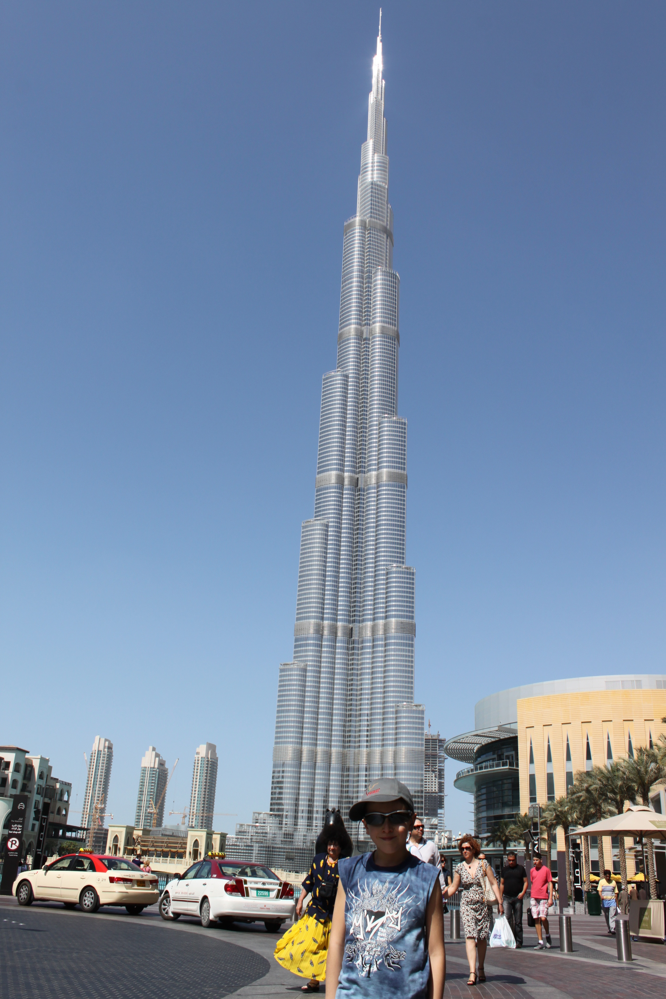
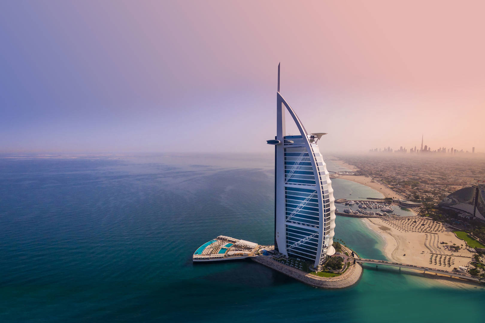
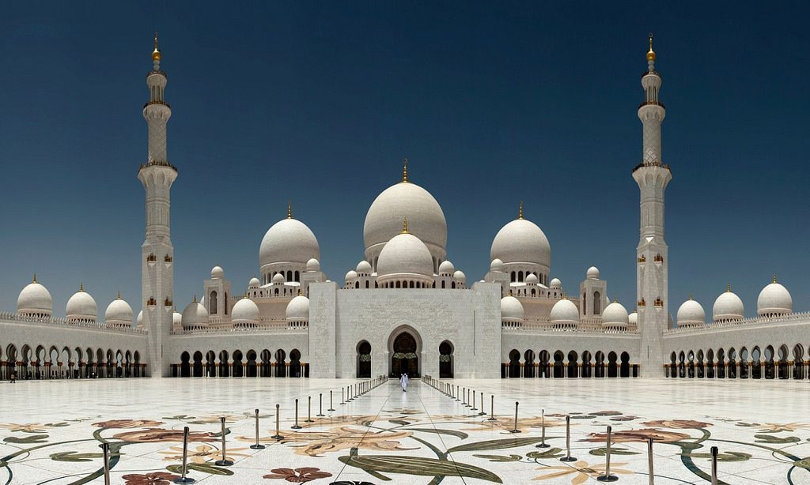
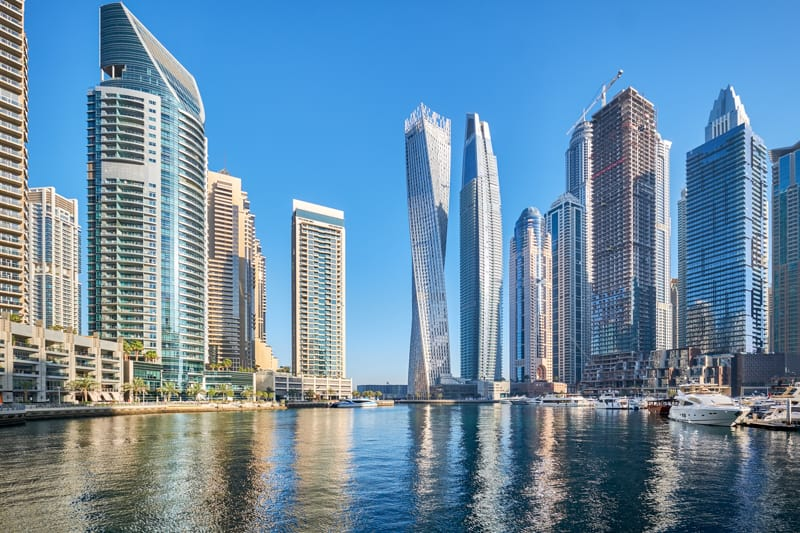
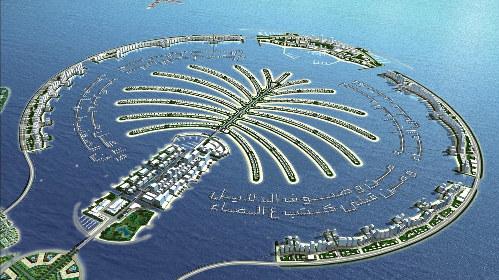

Високотехнологичният оазис насред пустинята
Публикувана на 20 януари 2021 година

Небостаргачите в Дубай
За повечето хора Обединените арабски емирства означават само едно място: Дубай, научно-фантастичният град на емблематични небостъргачи, острови с форма на палма, молове с големи размери, закрити ски писти и дворцови морски курорти. Но отвъд блясъка те очаква разнообразна мозайка от още шест емирства, всяко със свой характер и привлекателност. Посетих ОАЕ, когато бях на 6-годишна възраст, а това беше едва второто ми излизане в чужбина. Когато бях малък, полетът от София до Дубай беше цели 6 часа, докато днес благодарение на развитието на реактвините самолети полетът продължава едва 2,5-3 часа. Само три часа, а вече се намираш в дръг свят, друго измерение, град, който сякаш е излязъл от бъдещето. Любопитно е, че ако посещаваш Дубай всяка година, всеки път градът ще е станал по-голям и все повече небостаргачи ще бъдат построени. Ето толкова бързо се развива Дубай.
Дубай - дълбоки традиции и амбициозна футуристична визия
Бурж Халифа - най-високата сграда в света
Трудно е да не се възхищаваш на Дубай заради неговата неуморима радост, амбиция и способност да мечтае и да реализира проекти, които другаде никога не биха могли да излязат от чертожната дъска. Това е общество с превъзходна жажда, което е родило високи сгради и острови с форма на палма. Научнофантастичните концепции като летящи таксита, светкавичен влак Hyperloop и армия от робокопи са отражение на мисленето, което безстрашно прегръща бъдещето. С още много грандиозни проекти в процес на подготовка за Световното изложение 2020, става ясно, че Дубай е град, твърдо отговорен за написването на своята нова история.
Бурдж ал-Араб - единственият 7-звезден хотел в света
Голямата джамия "Шейх Зайед" - най-скъпата джамия в света
Небостаргачите в Дубай - постоянно издигани от земята
Осмото чудо на света - островът на небостъргачите и вилите Палм Джумейра